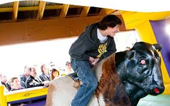

McCabane
On parle de la cabane à sucre MacCabane
Le temps des sucres
Galerie de photo
- 


.jpg)
À PROPOS
La famille McCabane œuvre depuis plus de 70 ans, dans le domaine de la restauration. Au fil des ans, nous nous sommes démarqué avec notre accueil chaleureux, notre service impeccable et la grande qualité de la nourriture que nous servons. À travers ce site, vous découvrirez l’origine de notre entreprise, l’évolution de celle-ci et bien attendu, la variété de nos services énumérés ici-bas : Cabane à sucre, Salle de réception et Les Produits d’Antan.
Venez vivre l’expérience de la Cabane à sucre traditionnelle, avec un repas typique et des activités variées, pour tous les membres de la famille : randonnée pédestre, balade de chevaux, mini-ferme, jeux gonflables, musée de poupée, théâtre de marionnette, etc.
Huit salles sont à votre disposition pour faire des réceptions de tout genre : mariage, anniversaire et autres. Vous serez charmé par le décor champêtre des salles et l’accueil exceptionnel de nos organisateurs d’événements.
Pour la période des fêtes, diverses activités sont élaborées afin de vous faire vivre l’expérience festive chez McCabane. Que ce soit pour les familles ou les entreprises, chacun y passera un moment formidable.
Durant toute l’année, vous avez accès à une boutique où vous trouverez des repas préparés sur place (les produits d’Antan) et des produits dérivés de l’érable. N’hésitez pas à nous rendre visite. Vous pouvez egalement faire vos achats en ligne !
Que ce soit par simple curiosité, un renseignement, une réservation ou pour commander des produits maison, depuis quatre générations, c’est toujours un plaisir de vous servir et de vous recevoir chez nous !
Nous vous souhaitons une bonne visite.
La Cabane à sucre McCabane